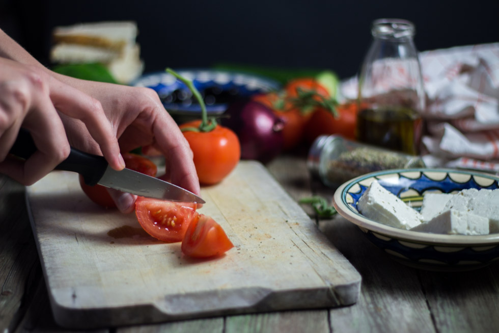
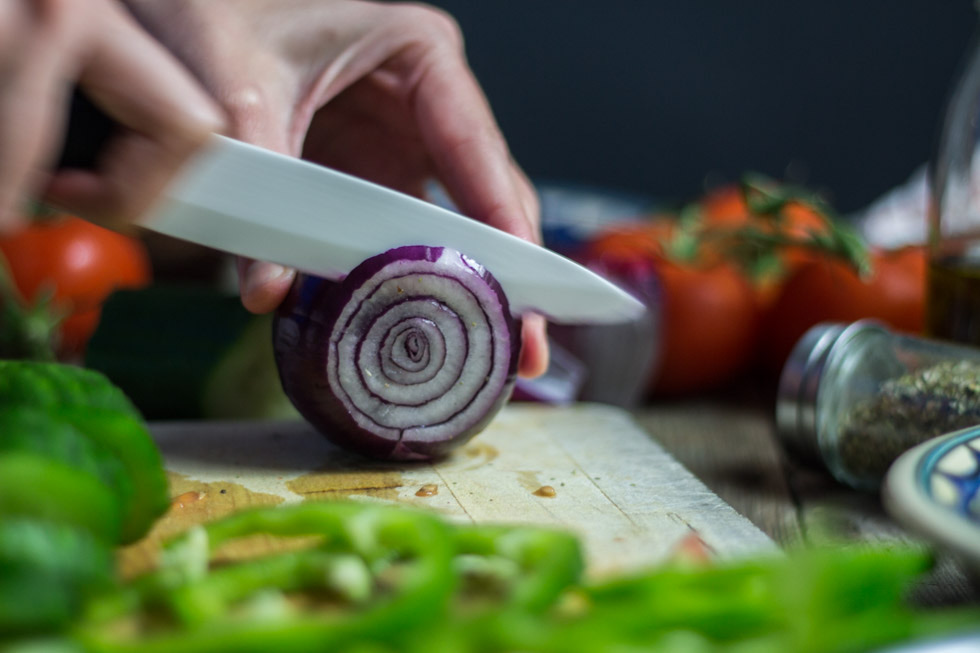

Salade grecque comme à Rhodes

Il fait chaud, dans 21 jours c’est enfin l’été et je prie pour qu’il fasse soleil! Pour l’occasion, je vous propose la recette d’une salade toute simple que tout le monde connait mais qui est devenue incontournable chez nous dès que le soleil pointe le bout de son nez! Il s’agit de la recette de la salade grecque!
Comme vous le savez, l’été dernier nous sommes partis sur l’île de Rhodes (petit article ici) et côté cuisine nous avons été servis! Avant, de la salade grecque j’en faisais de temps en temps mais depuis notre passage sur cette île ce n’est plus pareil. En effet j’aime retrouver à chaque fois un petit bout de nos vacances dans nos assiettes et reproduire les goûts et les sensations que j’ai pu connaitre lors de nos balades. En ce qui concerne la salade grecque il y a à peu près toutes les tavernes du coin qui en servent et ils la font tous à peu près de la même façon. Un peu de tomates, de poivrons, d’oignons, de concombre, de l’huile d’olive et puis de la bonne feta! Rien de bien compliqué, c’est même très très simple mais c’est absolument délicieux. Ici on aime gratter notre pain avec de l’ail et pour accompagner cette salade c’est juste parfait. Entre ma bougatsa, ma spanakopita et maintenant ma salade grecque vous pouvez facilement comprendre à quel point j’ai (nous avons) pu aimer les spécialités grecques et pour tout vous dire je suis assez nostalgique (beaucoup même) de ne pas y retourner tellement nous étions heureux là-bas!
J’espère que cette recette de salade grecque vous inspirera pour vos prochaines envies de salade avec les beaux jours qui arrivent! Ici c’est certain, elle sera au menu régulièrement… Je vous laisse avec la recette et n’hésitez pas à me dire ce que vous en pensez!!
Bon appétit!!
Ingrédients
- Tomates - 4
- Poivron vert - 1
- Concombre - 1/2
- Feta - 200g
- Oignon rouge - 1 moyen ou 1/2
- Olives
- Sel
- Origan
- Huile d'olive
- Vinaigre de vin rouge
- Tranches de pain
- Ail - 1 gousse
Instructions
- Couper les tomates en quartiers
- Couper le concombre, l'oignon rouge et le poivron en rondelles
- Mélanger le tout dans un grand saladier ou répartir dans deux grandes assiettes (ou quatre petites)
- Répartir des morceaux de feta dans chaque assiette et saupoudrez d'un peu d'origan
- Préparer la vinaigrette : dans un bol mélanger l'huile d'olive, le vinaigre et le sel (pour 3 càs d'huile / 1 càs de vinaigre)
- Découper des tranches de pain
- Passez-les sous le grill de chaque côté
- Gratter le pain avec une gousse d'ail
- Assaisonner la salade et servir immédiatement!


Les tips de la communauté
Recette simple et colorée très appréciée. Evoque les vacances en Grèce/Crète pour ceux qui connaissent. Testée et approuvée, procure une vraie sensation d'été et de vacances.
Astuces
- Les belles couleurs et la fraîcheur sont essentielles
- Parfait pour accompagner les beaux jours et fortes chaleurs
- Association feta-olives noires est un classique très apprécié
- Peut être préparée à l'avance pour un pique-nique
Variantes suggérées
- Varier les légumes selon la saison et disponibilité
- Ajouter ou retirer des ingrédients selon les goûts